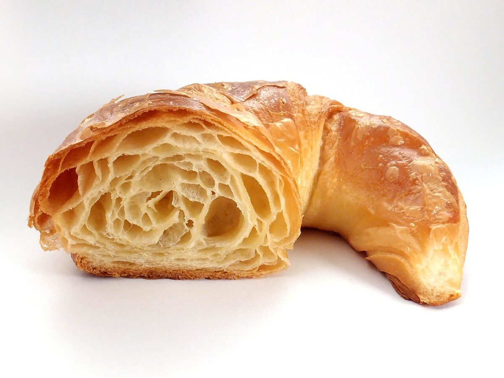

ベーカリー / 〒714-0083
なかむらベーカリー
岡山県笠岡市二番町にあるベーカリー「なかむらベーカリー」のご案内ページです。営業時間やメニューなど、詳しいことは準備中。まずはInstagramをのぞいてみてください。

全回路ON
回路一覧
試験点
写真で見る、パンまわりのもの
写真は笠岡市やこのお店のものではありません。国外・撮影地不明のフリー素材で、お店で提供しているものを示すものでもありません。



制作側の連想
分電盤に見立てた5ページ
この試作サイトの「分電盤」というテーマは、制作側の連想で、お店の理念・由来とは無関係です。パン屋さんと聞いて、スイッチを入れて始まる一日を想像し、5つのページを分電盤の5つの回路になぞらえました。いま開いているページのスイッチが「ON」の位置になります。お店の実際の様子とは関係のない創作です。
ご案内
お店のこと(確認できたものだけ)
| 所在地 | 〒714-0083 岡山県笠岡市二番町2-11 |
|---|---|
| 電話 | 0865-62-2051 |
| 営業時間 | 準備中 |
| 定休日 | 準備中 |
| ご予約 | 準備中 |
| 駐車場 | 準備中 |
| SNS | Instagram @nakamura.bakery |